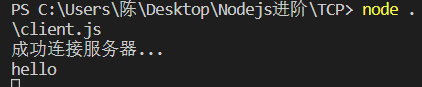
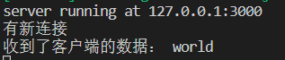
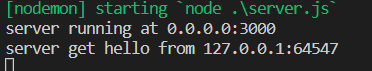
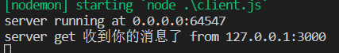
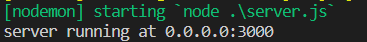
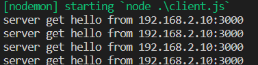
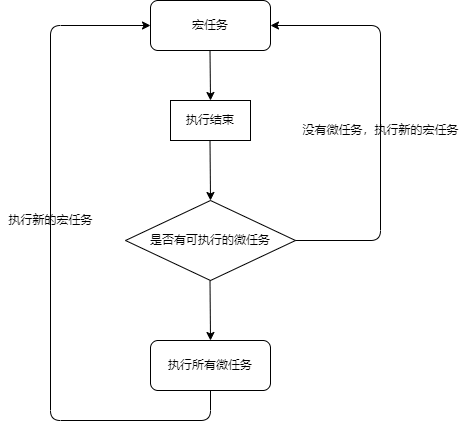
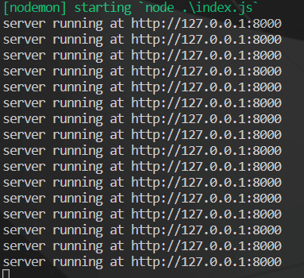
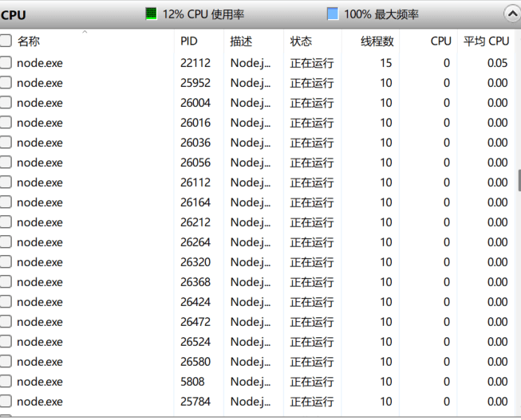

Nodejs进阶
fs模块
在Nodejs中，所有文件操作都通过fs模块实现。
在fs模块中，所有的方法都分为同步和异步两种来实现，具有sync后缀的方法为同步方法
fs中的一些概念
mode（权限位）：不同用户对文件的操作权限，分为文件所有者、文件所属组、其他用户
文件操作权限又分为三种，读（r）、写（w）、执行（x），数字表示为八进制数，具备权限的八进制数分别为4、2、1
readFileSync和readFile
readFileSync（同步）
它有两个参数：
- 第一个参数为读取文件的路径或文件描述符
- 第二个参数为options，默认值为null，可以传入编码或标识位
返回值为文件内容，如果没有传入第二个参数，返回的是二进制的格式
1 | const fs = require('fs') |
readFile（异步）
异步读取方法前两个参数和同步相同，最后一个参数为回调函数，这个函数有两个参数err和data，该方法没有返回值，回调函数在读取文件成功后执行
1 | fs.readFile(path.join(__dirname, './1.txt'), 'utf-8', (err, data) => { |
writeFile和writeFileSync
writeFileSync
它有三个参数：
- 第一个参数为写入文件的路径或文件描述符
- 第二个参数为写入的数据，类型为String或Buffer
- 第三个参数为options，默认值为null，其中有encoding（编码，默认为UTF-8）、标识位和mode（默认为0o666）
1 | const fs = require('fs') |
writeFile
异步写入方法前三个参数与同步相同，最后一个参数为回调函数，函数内有一个参数err，回调函数在文件写入数据成功后执行
1 | const fs = require('fs') |
appendFileSync和appendFile
与writeFile、writeFileSync不同的是，它会在原文件的后面追加内容
他有三个参数：
- 第一个参数为写入文件的路径或文件描述符
- 第二个参数为写入的数据，类型为String或Buffer
- 第三个参数为options，默认值为null，其中有encoding（编码，默认为UTF-8）、标识位和mode（默认为0o666）
1 | const fs = require('fs') |
open和close
open方法用于打开文件，他是一个异步的方法，有四个参数：
- path：文件路径
- flag：标识位
- mode：权限位
- callback：回调函数，有两个参数err和fd（文件描述符），打开文件后执行
1 | const fs = require('fs') |
close方法用于关闭文件，也是异步方法，他有两个参数：
- 第一个参数是要关闭文件的文件操作符
- 第二个参数是回调函数，回调函数有一个参数err，关闭文件后执行
1 | const fs = require('fs') |
createReadStream
createReadStream用于大文件读取，当文件过大时，无法一次性读取全部内容到缓存中或文件大小位置的情况
1 | const fs = require('fs') |
TCP（传输控制协议）
特点：传输速度较慢、数据传输可靠
TCP只是负责数据的传输，不关心传输的数据格式问题。
如果需要使用TCP通信完成某种功能，则需要制定数据格式协议，或者使用第三方协议
创建TCP服务端和客户端
使用Nodejs内置的net模块来构建TCP服务端和客户端
服务端
1 | const net = require('net') |
客户端
1 | const net = require('net') |
TCP服务端和客户端的双向通讯
服务端给客户端发消息，并监听客户端发来的消息
1 | const net = require('net') |
客户端给服务端发消息，并监听服务端发来的消息
1 | const net = require('net') |


UDP（用户数据报协议）
特点：传输速度快、数据传输不可靠
UDP的三种传播方式：
- 单播：目的地址为单一目标
- 广播（在IPv6中广播方式被取消）：目的地址为网络中的所有设备，广播数据包被限制在局域网中
- 组播：把信息传递给一组目的地址
**单播面对”一对多”**：对于同一份数据，如果存在多个接收者，Server需发送与接收者数目相同的单播数据包，当接收者较多时，将极大的加重Server的负担
**广播面对”一对多”**：一旦发送广播数据，则广播域内的所有设备都会收到这个数据包，并且不得不消耗资源去处理，大量的广播将消耗网络带宽以及设备资源
地址范围分为两种:
- 受限广播：它不会被路由转发，IP地址的网络字段和主机字段全为1就是地址
255.255.255.255 - 直接广播：会被路由转发，IP地址的网络字段定义这个网络，主机字段通常全为1，例如
192.168.10.255
**组播面对”一对多”**：组播十分适合一对多，只需要将特点的成员加入到组播组，他们就可以收到数据包。当存在多个组播组成员时，源无需发送多个数据拷贝，仅需发送一份即可，组播网络设备会根据实际需要转发或拷贝组播数据
dgram模块
Node为我们提供了dgram模块用于构建UDP服务
使用该模块创建UDP套接字，套接字一旦建立，既可以作为客户端发送数据，也可以作为服务器接收数据
1 | const dgram = require('dgram') |
socket方法
| API | 说明 |
|---|---|
| bind() | 绑定端口和主机 |
| address() | 返回Socket地址对象 |
| close() | 关闭Socket并停止监听 |
| send() | 发送消息 |
| addMembership() | 添加组播成员 |
| dropMenbership() | 删除组播成员 |
| setBroadcast() | 设置是否q启动广播 |
| setTTL() | 设置数据报生存时间 |
| setMulticastTTL() | 设置组播数据报生存时间 |
UDP单播
创建一个socket来模拟服务端，另一个socket来模拟客户端
服务端
1 | const dgram = require('dgram') |
客户端
1 | const dgram = require('dgram') |


UDP广播
创建一个socket来模拟服务端，另一个socket来模拟客户端
服务端
1 | const dgram = require('dgram') |
客户端
1 | const dgram = require('dgram') |


UDP组播
服务端
1 | const dgram = require('dgram') |
客户端
1 | const dgram = require('dgram') |
Http服务
Node提供了基本的http和https模块用于HTTP和HTTPS的封装
1 | const http = require('http') |
Server实例
| API | 说明 |
|---|---|
| ‘close’ | 服务关闭时触发 |
| ‘request’ | 收到请求消息时触发 |
| server.close() | 关闭服务 |
| server.listening | 获取服务状态 |
请求对象
| API | 说明 |
|---|---|
| request.method | 请求方法 |
| request.url | 请求路径 |
| request.headers | 请求头 |
| request.httpVersion | 请求HTTP协议版本 |
响应对象
| API | 说明 |
|---|---|
| response.end() | 结束响应 |
| response.setHeader(name, value) | 设置响应头 |
| response.removeHeader(name, value) | 删除响应头 |
| response.statusCode | 设置响应状态码 |
| response.statusMessage | 设置响应状态短语 |
| response.write() | 写入响应数据 |
| response.writeHead() | 写入响应头 |
构建基本的http服务
1 | const http = require('http') |
响应html内容
1 | const http = require('http') |
统一处理静态资源
统一处理静态资源要根据客户端需求返回资源，这给响应头的配置造成了一定的困难
可以使用mime工具来帮助我们根据不同资源生成不同响应头
下载mime包
1 | npm i mime |
mime有两个方法：
mime.getType() 传入文件扩展名，返回对应的响应头类型 例如：mime.getType(‘txt’) => ‘text/plain’
mime.getExtension() 传入响应头类型返回文件扩展名 例如：mime.getExtension(‘text/plain’) => ‘txt’
在html中请求的src资源，是将src中的相对路径拼接到http路径之后发起请求来获取
例如： 就是http://127.0.0.1:4000/static/js/index.js
1 | const http = require('http') |
Https服务
HTTPS是基于TLS/SSL的HTTP协议，HTTP协议中的所有数据都是使用明文传输的，而HTTP是将数据加密后进行传输
在HTTPS数据传输的过程中，需要用SSL/TLS对数据进行加密和解密，TLS/SSl是一个公钥/私钥结构，数据采用对称加密，密钥使用非对称进行加密
但是，服务器可能会被伪造，中间截取后骗取密钥，对数据造成泄露
为了解决这个问题，TSL/SSL引入了数字证书进行认证，与直接使用公钥不同，数字证书包含了服务器的名称和主机名、服务器的公钥、签名颁发机构的名称、来自签名颁发机构的签名，连接建立前，会通过证书中的签名确认收到的公钥是来自目标服务器的，从而产生信任关系
第三方数字认证中心（Certificate Authority），简称CA
事件循环
事件循环允许Node.js执行非阻塞I/O操作，尽管javaScript是单线程的，由于大多数现代内核都是多线程的，因此它们可以处理在后台执行的多个操作。当其中一个操作完成时，内核会告诉Node.js，以便可以将相应的回调添加到轮询队列中以最终执行
事件循环的本质：在浏览器或者node环境中，运行时对js脚本的调度方式就叫做事件循环
浏览器事件循环
JS为什么是单线程的？
浏览器js的作用是操作DOM，这决定了它只能是单线程的，不然会带来复杂的同步问题。假设js同时有两个线程，一个线程在某个dom上添加内容，另一个线程删除了这个dom节点，这时浏览器该以哪个线程为准？
任务队列
单线程就意味着所有的任务需要排队，但是I/O操作时cpu是闲着的。所以js就设计成了一门异步的语言。
任务分为两种：一种是同步任务（synchronous），另一种是异步任务（asynchronous）
- 所有同步任务都在主线程上执行，形成一个执行栈（execution context stack）
- 主线程外，还维护着一个任务队列。只要异步任务有了运行结果，就在任务队列之中放置一个事件
- 一旦执行栈中的所有同步任务执行完毕，系统就会读取任务队列，看看里面有哪些事件。那些对应的异步任务就会结束等待状态，进入执行栈，开始执行
- 主线程不断重复上面的第三步
例如下列代码，
- setTimeout先进入主线程，然后异步fn函数被加入到I/O中
- setTimeout出栈，主线程继续执行，console进入主线程，打印
main - 1秒之后将fn加入到任务队列
- 任务队列检查主线程是否有任务在执行，发现主线程没有任务，将fn函数加入到主线程，打印
fn1
2
3
4
5
6
7
8
9let fn = () => {
console.log('fn');
}
setTimeout(fn, 1000)
console.log('main');
//main
//fn
主线程从任务队列中读取事件，这个过程是循环不断的，所以整个的这种运行机制又称为Event Lop（事件循环）
宏任务与微任务
除了广义的同步任务和异步任务，js单线程中的任务可以细分为宏任务（macrotask）和微任务（microtask）
- 宏任务：script（整体代码）、
setTimeout、setInterval、setImmediate、I/O、UI rendering - 微任务：
Promise、process、nextTick、Object、observe、MutationObserver
宏任务进入主线程，执行过程中会收集微任务加入微任务队列
宏任务执行完成后，立马执行微任务中的任务。微任务执行过程中将再次收集宏任务，并加入到宏任务队列
反复执行1，2操作

例如下列代码
1 | setTimeout(() => { |
- 首先setTimeout进入宏任务，然后将
log('setTimeout')放到I/O中，setTimeout出队 - 然后Promise中的
log('promise')加入到微任务队列中 log('main')加入到宏任务队列，打印main，log('main')出队- 宏任务执行完毕，执行微任务，打印
promise - 微任务执行完毕，没有需要执行的新的宏任务。此处就是事件循环的一环事件（每执行完一轮宏任务和一轮微任务）
- 将
log('setTimeout')加入到宏任务，打印setTimeout
Nodejs事件循环
node事件循环和浏览器事件循环完全不一样
Node事件循环阶段
- timers（定时器）：此阶段执行
setTimeout和setInterval调度的回调函数 - I/O callback（I/O回调）：此阶段执行几乎所有的回调函数，除了
close callbacks（关闭回调）和 由timers、setImmediate调度的回调 - idle（空转）：此阶段只在node内部使用
- poll（轮询）：检索新I/O事件，在恰当的时候Node会阻塞在这个阶段
- check（检查）：
setImmediate的回调会在此阶段被调用 - close callbacks（关闭事件的回调）：例如
socket.on('close', cb)的回调会在此阶段被调用
在这些阶段中，比较重要且复杂的是poll阶段
- 如果poll队列不为空，将会同步的执行队列中的回调，直到队列为空或回调到达系统上限
- 如果poll队列为空
- 并且代码中有
setImmediate的回调，那么将结束poll阶段，执行check阶段的队列（就是setImmediate的回调） - 并且代码中没有
setImmediate的回调，事件循环会阻塞 在该阶段，等待回调加入到队列中，一旦有回调加入就执行
- 并且代码中有
- 如果进入poll阶段，且代码中有timers
- 如果poll处于空闲，事件循环将会检查timers，如果有timers已经到了执行的时间，事件循环就会按顺序进入timers阶段，并执行timers队列（也就是进入下一阶段的事件循环）
代码一
1 | const fs = require('fs') |
分析：
- 首先执行setTimeout，将回调放入I/O队列，他要10ms之后才执行，然后执行到asyncOperation函数，进行文件读取操作，需要2ms读取完成后执行回调，这个回调也放入到I/O中，所以此时timers阶段没有需要执行的回调。
- 来到I/O callback（I/O回调），没有需要执行的回调
- 来到poll阶段，现在的时间是0ms。此时poll队列为空，事件循环阻塞在poll阶段
- 时间为2ms时，读取文件操作完毕，读取文件的回调进入poll队列被立即执行。而这个回调因为内部的while循环需要执行20ms
- 到10ms时，setTimeout已经到了执行的时间，但是由于js为单线程且读取文件的回调占用了这个线程，所以setTimeout的回调无法执行
- 当22ms时，读取文件的回调执行完毕，此时poll队列为空且有timers。所以setTimeout回调会被加入到第二轮事件循环的timers阶段中，然后执行这个回调
代码二
1 | setTimeout(function timeout() { |
结果：上述代码的执行顺序不确定
不确定的原因：事件循环的启动也需要事件，可能执行到poll阶段已经超过1ms，此时setImmediate在check阶段被执行，先于setTimeout。反之setTimeout先执行
nextTick
process.nextTick()不在事件循环的任何阶段执行，而是在各个阶段切换的中间执行
设计原因：允许开发之通过调用process.nextTick()来阻塞I/O
示例代码：来看看下面代码的打印结果
1 | const fs = require('fs') |
分析：
- 由于读取文件需要耗时，所以在timers和I/O回调阶段没有要执行的回调，事件循环被阻塞在poll阶段
- 当文件读取完成，将setTimeout的回调加入I/O队列。此时poll还是为空，且有setImmediate回调，所以从poll阶段要走到check阶段，在这期间执行两个nextTick，打印出
nextTick1和nextTick2 - 来到check阶段，执行setImmediate回调，打印
setImmediate - 从check阶段进入下一轮事件循环的timers阶段之间执行nextTick，打印
nextTick3 - 来到第二轮事件循环的timers，在I/O队列的setTimeout回调加入到timers中并执行，打印
setTimeout
多线程和多进程
进程是资源分配的最小单位，线程是CPU调度的最小单位
线程是进程的一个执行流，它是比进程更小的能独立运行的基本单位，一个进程由多个线程组成，线程与同属一个进程的线程共享进程拥有的全部资源
进程有独立的地址空间，一个进程崩溃后，在保护模式下不会对其他进程造成影响，而线程只是一个进程中的不同执行路线，线程有自己的堆栈和局部变量，但线程没有单独的地址空间，一个线程死掉就等于整个进程死掉
浏览器中的进程和线程：
- 进程：一个窗口就是一个进程
- 线程：一个窗口由多个线程组成，渲染线程、js执行线程、垃圾回收线程等
node服务中的进程和线程：
- 进程：监听某一个端口的http服务
- 线程：http服务由多个线程组成
- 主线程：获取代码、编译执行
- 编译线程：主线程执行的时候，可以优化代码
- Profiler线程：记录哪些方法耗时，为优化提供支持
- 其他线程：用于垃圾回收等
nodejs为什么需要多进程？
nodejs单线程（在nodejs的v10.5版本中加入了多线程），在处理http请求的时候一个错误都会导致整个进程的退出，为了服务的稳定，所以需要多进程
多进程和多线程的优缺点
多进程和多线程一般都是结合起来使用，不要陷入非此即彼的误区
| 对比维度 | 多进程 | 多线程 |
|---|---|---|
| 数据共享 | 数据共享复杂；数据是分开的，同步简单 | 共享进程数据；同步复杂 |
| 内存、CPU | 占用内存多，切换复杂，CPU利用率低 | 占用内存少，切换简单，CPU利用率高 |
| 创建、销毁、切换 | 复杂，速度慢 | 简单，速度快 |
| 编程、调试 | 简单 | 复杂 |
| 可靠性 | 进程间不会相互影响 | 一个线程挂掉将导致整个进程挂掉 |
| 分布式 | 适应于多核、多机分布式 | 适应于多核分布式 |
总结：线程快，进程可靠性高
process进程
process对象是Node的一个全局对象，提供当前Node进程的信息，它可以在脚本的任何位置使用，不必通过require引入
属性：
process.argv返回一个数组，包含了启动node进程时的命令行参数process.env返回包含用户环境信息的对象，可以在脚本中对这个对象进行增删改查的操作process.pid返回当前进程的进程号process.platform返回当前的操作系统process.version返回当前node版本
方法：
process.cwd()返回node进程当前工作目录process.chdir()变更node进程的工作目录process.nextTick(fn)将任务放到当前事件循环的尾部，添加到next tick队列，一旦当前事件轮询队列的任务全部完成，在next tick队列中的所有callback会被依次调用process.exit()退出当前进程
cluster创建多进程
使用Node内置模块cluster来创建多进程
1 | const cluster = require('cluster') |


cluster属性和方法
isMaster返回该进程是不是主进程isWorker返回该进程是不是工作进程fork()只能通过主进程调用，会衍生出一个新的worker进程，返回一个进程对象setupMaster([settings])用于修改fork的默认行为，一旦调用，将会按照settings进行设置settings用于配置，参数列表：exec：worker文件路径args：传递给worker的参数execArgv：传递给Node可执行文件的参数列表